«Кто сыграет с нами в субботу?»
Пишете в пять чатов, и сообщение тонет за час. В приложении объявление живёт, пока не найдётся соперник, и его сразу видят все команды вашего года.
Товарищеские игры · детский хоккей · Москва и МО
Приложение для тренеров, родкомов и родителей: в Telegram или отдельным значком на телефоне. Опубликуйте, когда и где готовы играть, и команды вашего года откликнутся сами. Без обзвона, без пяти чатов и без «а какой у вас год?».
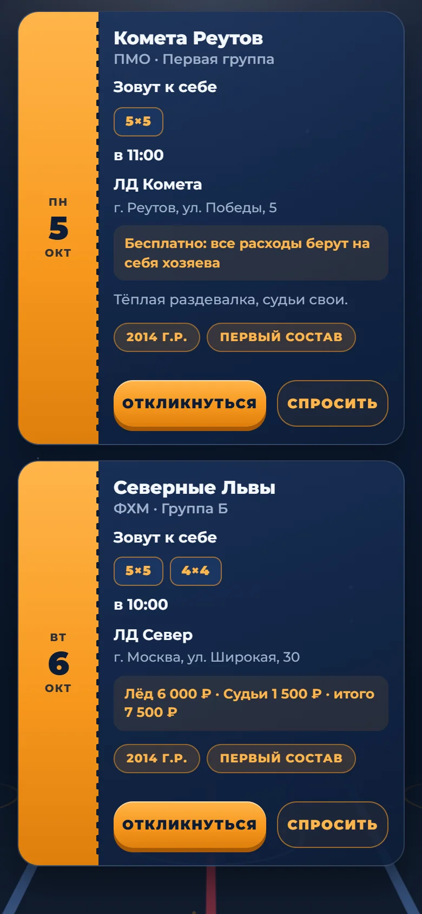
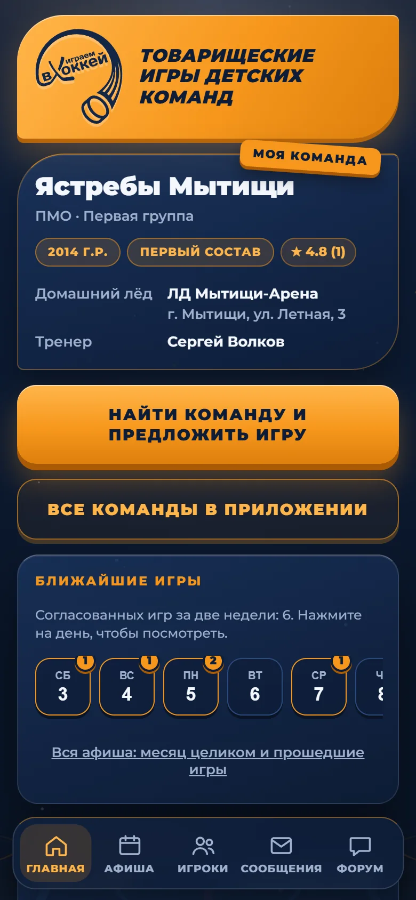
Знакомо?
Пишете в пять чатов, и сообщение тонет за час. В приложении объявление живёт, пока не найдётся соперник, и его сразу видят все команды вашего года.
Год, состав, арена, формат и условия по льду уже в карточке. Телефон открывается только после того, как согласились обе команды.
Опубликуйте заявку на вратаря, защитников или нападающих — родители подходящих ребят получат уведомление. А тем, кому не хватает игр, есть анкета «Ищу игру».
Как это работает
Выберите год, лигу (ФХМ, ПМО, КФК) и свою команду из списка. Нет в списке? Впишите название. Для малышей 2018–2019 лиг не нужно. Укажите домашнюю арену — она подставится в ваши объявления.
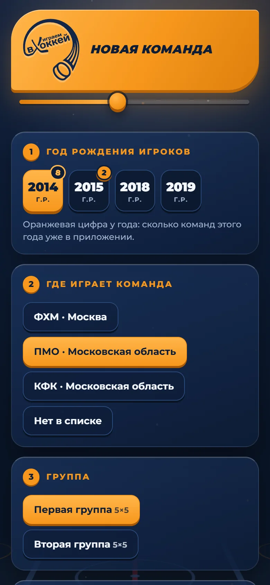
«Зову к себе» или «Еду в гости»: выберите дни, время ползунком, формат 5×5, 4×4 или 3×3 и условия льда. Приложение сразу покажет, кто уже ищет соперника на эти дни.
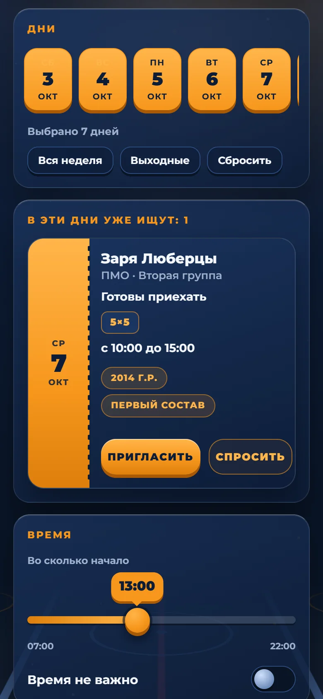
Команды откликаются сами: вы видите год, лигу, арену, предложенные день и время. Первый откликнувшийся подсвечен. Вопросы до выбора — в переписке внутри приложения, телефоны остаются закрытыми.
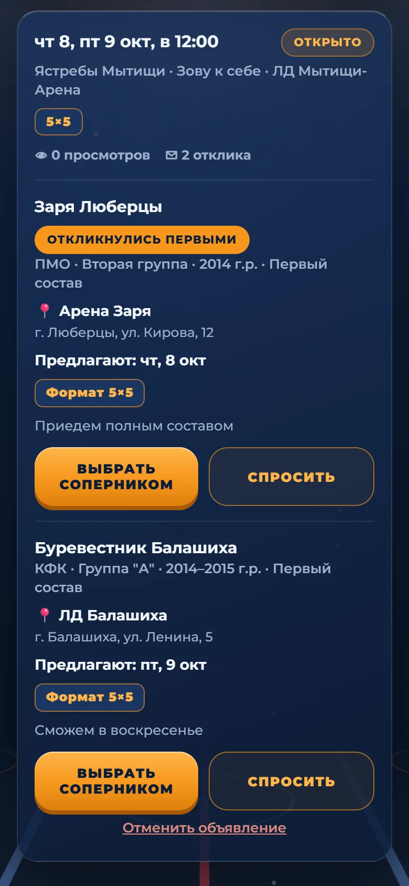
После игры обе стороны подтверждают счёт — расхождений не остаётся. Затем можно оценить соперника: приём, судейство, игру и пунктуальность. Средняя оценка видна всем в каталоге.
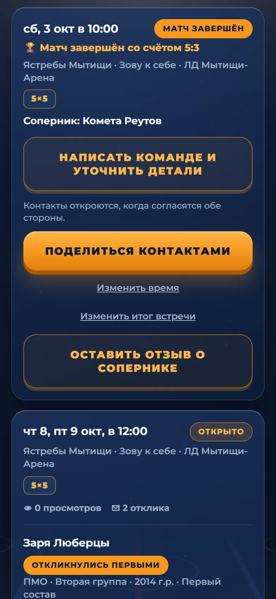
Для кого
Зарегистрируйте команду за две минуты, публикуйте «Зову к себе» или «Еду в гости» и выбирайте соперника среди откликов. Время, формат, арена, условия льда — всё в одном объявлении.
Как это устроено →Следите за командой ребёнка: ближайшие игры, афиша, чат команды. Бот напишет, когда команда объявила игру или игра согласована.
Открыть в Telegram →Заведите профиль игрока (имя, год, амплуа, клуб), выставьте анкету «Ищу игру» или откликнитесь на заявку команды, которой нужен вратарь или защитник.
Открыть в Telegram →Как начать
Команды, игры и отклики общие и там, и там. Выберите, как удобнее; при желании можно пользоваться обоими.
Нажмите кнопку ниже или наведите камеру телефона на QR-код. Откроется Telegram с ботом «Товарняки».
Эта кнопка внизу экрана чата. Если Telegram на английском, она называется «Start».
Кнопка под приветствием бота. Потом приложение открывается и кнопкой «Играем» рядом с полем ввода.
Тренер или родком регистрирует команду, родитель присоединяется к команде ребёнка. Это займёт пару минут.
Уведомления об откликах и играх придут в Telegram: специально ничего включать не нужно.
Нажмите кнопку ниже или наведите камеру на QR-код. Страница откроется в браузере (лучше всего в Chrome).
Впишите имя и нажмите «Создать профиль». Telegram и номер телефона не нужны.
Приложение покажет ключ из 16 знаков. Сфотографируйте экран или перепишите: с ним можно вернуться к своим командам, если телефон сменится.
Нажмите «Установить приложение» в карточке «Поставьте на телефон». Если её нет, откройте меню браузера (справа вверху) и выберите «Установить приложение» (иногда «Добавить на главный экран»).
Телефон спросит подтверждение: название уже будет «Товарняки», ничего вписывать не нужно. Нажмите «Установить».
Если у вас Яндекс Браузер или другой: пункт обычно называется так же («Установить приложение» или «Добавить на главный экран»). Если его нет, скопируйте адрес и откройте его в Chrome.
Откройте значок «Товарняки», зайдите в «Профиль и вход» и нажмите «Включить уведомления». Разрешите их в окне телефона.
Нажмите кнопку ниже или наведите камеру на QR-код. Значок на экран «Домой» надёжнее всего ставится именно из Safari.
Так бывает: на многих iPhone по умолчанию стоит Яндекс или другой браузер, а ссылки из мессенджеров открываются внутри них. Перейти в Safari можно за полминуты:
Ссылку открыли из Telegram или WhatsApp? В нижнем меню нажмите «⋯» или значок компаса и выберите «Открыть в Safari» (название пункта может немного отличаться).
Хотите, чтобы ссылки всегда открывались в Safari? В «Настройках» iPhone найдите свой браузер (например, Яндекс) и выберите «Приложение для браузера по умолчанию» → «Safari». В новых версиях iOS это же в «Настройки» → «Приложения» → «Приложения по умолчанию». Названия пунктов зависят от версии iOS.
Квадрат со стрелкой вверх в нижней панели Safari (на iPad вверху справа).
Откроется список. Если нужного пункта не видно, прокрутите список вверх пальцем: он ниже, чем «Скопировать» и «Добавить закладку».
Название уже будет «Товарняки», а значок — наш логотип «Играем в хоккей». Ничего стирать и вписывать не нужно: нажмите «Добавить» в правом верхнем углу.
Запустите «Товарняки» с экрана «Домой» и впишите имя. Важно: на iPhone значок хранит данные отдельно от Safari, поэтому профиль создавайте уже в нём.
Сохраните ключ (снимок экрана подойдёт). Затем «Профиль и вход» и «Включить уведомления». Это работает на iOS 16.4 и новее.
Сменился телефон или пропал значок? Откройте приложение, выберите «Уже есть профиль» и введите ключ: команды и игры вернутся.
Команды, игры и отклики останутся теми же. Нужен только короткий код, который показывает приложение в Telegram.
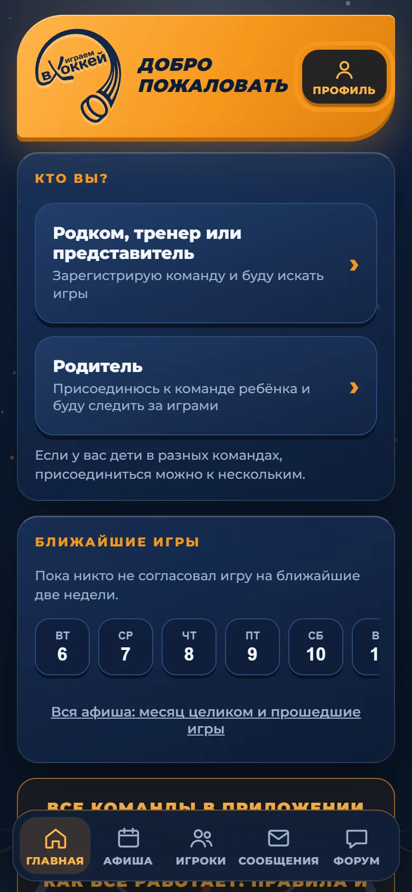
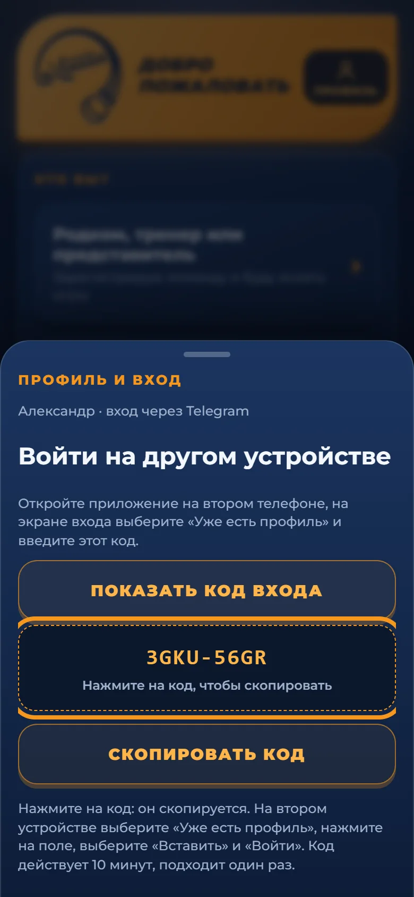
Нет Telegram, но вы уже создавали профиль на другом телефоне? Вместо кода введите там же ключ восстановления, который вы сохранили.
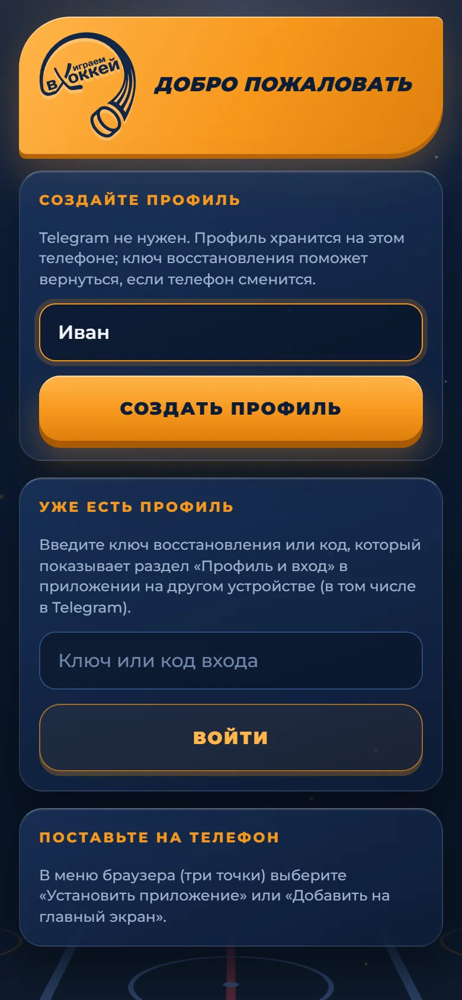
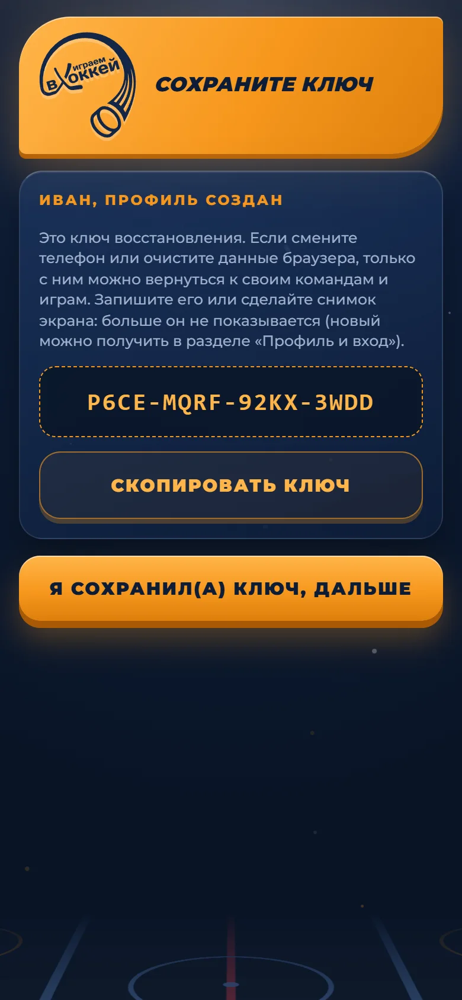
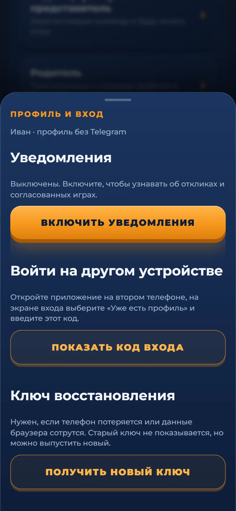
Возможности
Несколько дней, время, формат 5×5 / 4×4 / 3×3, условия льда. Личное предложение конкретной команде видит только она.
Календарь всех согласованных игр с наклейками на днях. Листайте вперёд и назад, смотрите счёт прошедших матчей.
Справочник по лигам и дивизионам ФХМ, ПМО и КФК, отдельно команды из других регионов. Найти и предложить игру — в два касания.
Заявки команд на вратаря, защитников и нападающих, анкеты «Ищу игру». Игрок может быть записан на два амплуа.
Задайте вопрос по объявлению или предложите игру, не раскрывая телефон. Контакты открываются по обоюдному согласию.
Матч состоялся или нет, счёт — обе команды подтверждают одно и то же. Игра попадает в афишу как завершённая.
Оценки от 1 до 5 за приём, судейство, игру соперника и пунктуальность. Хорошие хозяева заметны с первого взгляда.
Новое объявление вашего года, отклик, выбор соперника, ответ другой команды — бот пишет по делу, без спама.
Тренер и родком могут вести команду вместе, до пяти человек. Новых принимает владелец команды.
Посмотрите изнутри
Названия команд на скриншотах вымышленные.
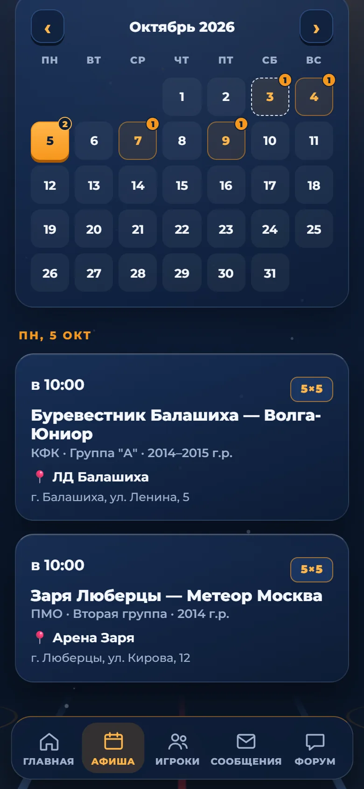
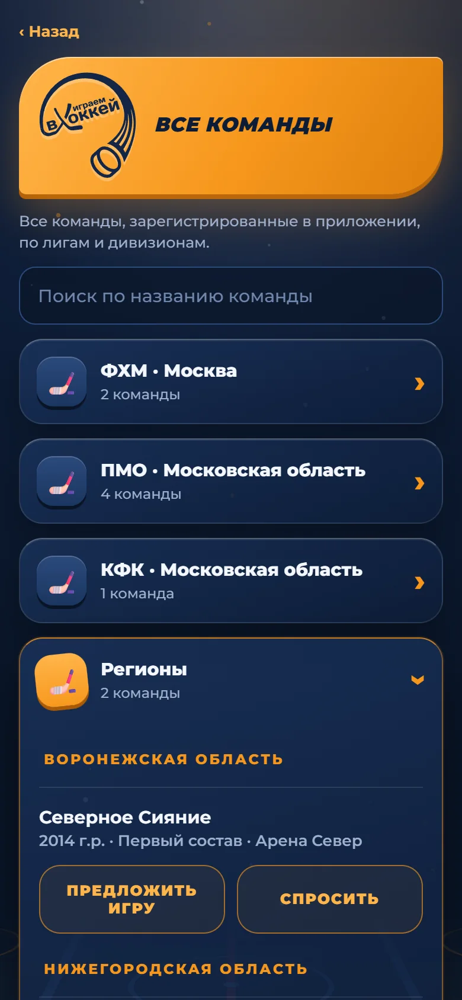
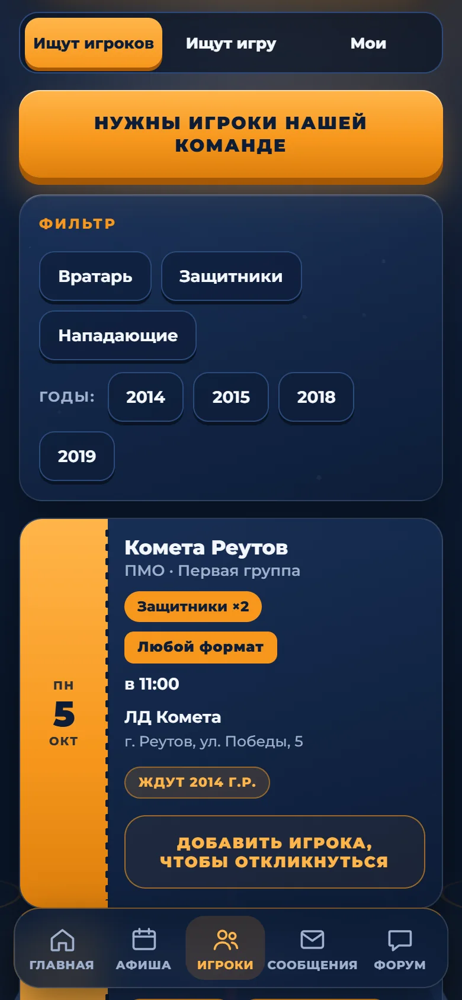
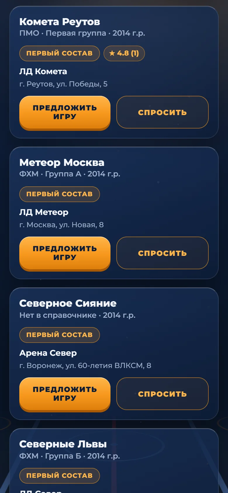
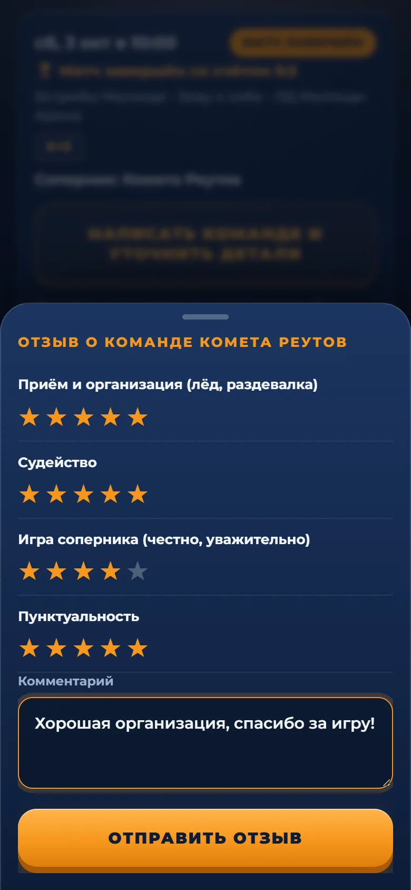
Безопасно для детей
Детский хоккей: рядом дети и их родители. Поэтому приложение устроено так, чтобы лишнее не светилось.
Контакты соперника открываются, только когда согласились обе команды.
Имя, год рождения, амплуа и клуб. Фото, документы и страховка не нужны.
Ссылки и реклама в чатах и на форуме не публикуются, на сообщение можно пожаловаться.
Вопросы
Нет. Если Telegram у вас есть, нажмите «Открыть в Telegram», запустите бота и откройте приложение кнопкой в чате. Если не работает или не нужен, откройте «Без Telegram: на телефон», создайте профиль (достаточно имени) и поставьте приложение на экран телефона. Данные команд, игры и отклики общие в обоих вариантах.
Откройте ссылку на странице приложения. На Android нажмите «Установить приложение» (или меню браузера → «Установить приложение»). На iPhone в Safari нажмите «Поделиться» → «На экран Домой». Магазин приложений не нужен, значок появится среди остальных. На iPhone профиль лучше создавать уже в значке: в Safari и на значке данные хранятся раздельно (если создали в Safari, войдите в значке по ключу).
Скопируйте адрес приложения, откройте Safari (значок-компас на экране «Домой») и вставьте адрес в адресную строку. Из Telegram или WhatsApp нажмите «⋯» или значок компаса в нижнем меню и выберите «Открыть в Safari». Показать пошагово, с картинками.
В Telegram откройте приложение и нажмите «Профиль» в оранжевой шапке вверху, затем «Показать код входа» и нажмите на сам код: он скопируется. На телефоне выберите «Уже есть профиль» и вставьте код. Показать на картинках.
При создании профиля приложение показывает ключ восстановления: запишите его или сделайте снимок экрана. С ним можно войти на новом телефоне и вернуться к своим командам. Ещё можно взять короткий код входа на уже работающем устройстве: раздел «Профиль и вход».
Да: в разделе «Профиль и вход» включите уведомления, и телефон сообщит об откликах, согласованных играх и сообщениях. На iPhone это работает после установки значка на экран «Домой».
Годы рождения 2010–2019. Команды ФХМ, ПМО и КФК выбираются из списка; любой другой клуб регистрируется по названию. У 2018–2019 официальных турниров пока нет, поэтому регистрация проще.
Основа — Москва и Подмосковье, но команды из других регионов тоже регистрируются: для них есть отдельный раздел «Регионы» в списке всех команд.
Только имя, год, амплуа и клуб. Телефон родителя виден лишь тем, с кем вы договорились об игре, и только после взаимного согласия.
Он выбирает ту же команду при регистрации — приложение предложит отправить заявку владельцу. После подтверждения командой можно управлять вместе (до пяти человек).
Выберите «Нет в списке» и впишите название; при желании укажите регион. Если похожая команда уже есть, приложение предупредит, чтобы не получилось дублей.
Прямо в приложении: кнопка «Поддержка, ошибки и предложения» на главном экране. Сообщение сразу попадает разработчику.
Откройте приложение, зарегистрируйте команду и опубликуйте первое объявление. Это займёт пару минут.